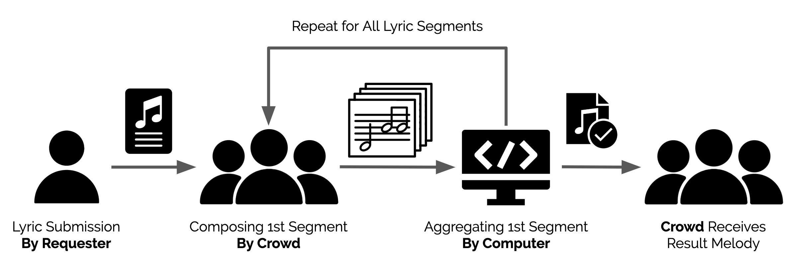

Accessing and listening to music has become easier than ever thanks to numerous music streaming platforms available nowadays. However, composing music remains to be challenging and inaccessible to most people due to the musical expertise required to do so. Crowdsourcing solutions have already been tried-and-tested in the music industry, but most platforms worked by connecting expert music artists. Ones that supported casual use were limiting and did not allow enough room for musical experimentation. Melodize, is a crowd-sourced melody composition platform where people can submit lyrics to receive a suitable melody “crowd-composed” by other users. Users with no musical expertise can take part in the composition of submitted lyric snippets. To improve worker quality while ensuring freedom of expression, we introduce the Aggregate Display function, which lets users reflect on the input of other users to accommodate the creation of a musical consensus. Although Melodize did not generate musical masterpieces, it has the potential to produce inspirational melodies or the basis of more complex and meaningful remixes and adaptations.
Our platform supports three core tasks: 1) submission of lyrics, 2) composition of melodies, and 3) community-wide interactions. Requesters submit their lyrics, and workers compose song sequentially from the beginning. The song is divided into segments and users work on one segment at a time. After enough users composed the segment, they work on the next segment and so on. Computer aggregates user inputs for previous segments and users can check previous melodies while working on their current segment. Completed songs are open for viewing for all users in the gallery page. Users can listen to, and even try altering the notes of the completed songs.
Melody Aggregation

The song is divided into 8 note segments. In order for a segment to begin composition, the previous one must be finalized. This allows for the composers to get a sense of continuity between the segments when composing. In order to prevent overrepresentation of a single composer, each user can only submit for a single segment once. Such a system model may be counterintuitive to users, which is why we implemented a tutorial and an about page. Due to the subjective and open nature of music composition, we found the designing of an aggregation method quite challenging. An issue is that since the notes being submitted by users are not influenced by each other, that a cohesive song will be outputted is not guaranteed. This is why we decided to promote implicitly coordinated inputs by allowing users to see what other users inputted. Within the compose page is the ‘distribution’ button, which shows users previous submission for that segment. The frequency of the chosen notes are shown by gray-scale, the more popular the note, the darker it is. This would ensure a certain amount of convergence between the inputs.